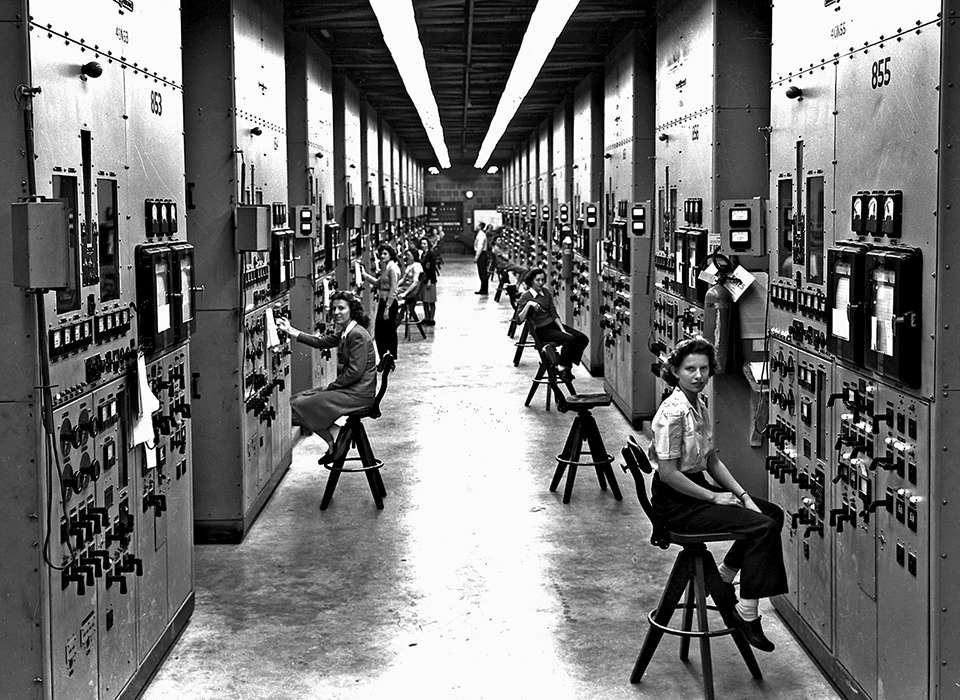

- Radio și televiziune – În anii '20–'30 radioul a devenit principalul mijloc de comunicare în masă. Primele transmisiuni TV publice au apărut în Anglia (BBC, 1936) și Germania (Berlin, 1935). Au schimbat profund modul în care oamenii primeau știri și divertisment.
- Automobilul de serie – Linia de asamblare introdusă de Henry Ford a făcut automobilul accesibil clasei de mijloc. Modelul Ford T a transformat transportul, urbanismul și economia, deschizând era industriei auto moderne.
- Aviația comercială – Au apărut primele zboruri transatlantice (Lindbergh, 1927) și primele linii aeriene comerciale. Avionul a încetat să mai fie doar o armă și a devenit un mijloc de transport pentru oameni și mărfuri.
- Radarul – Dezvoltat de britanici înaintea celui de-Al Doilea Război Mondial, radarul a fost decisiv în Bătălia Angliei (1940), permițând detectarea avioanelor inamice. Astăzi este folosit în aviația civilă, navigație și meteorologie.
- Tancuri și avioane moderne – Al Doilea Război Mondial a adus tancuri performante (T-34 sovietic, Sherman american), avioane de vânătoare cu motor cu reacție (Me 262 german) și bombardiere strategice (B-17, B-29) capabile de raiduri pe distanțe lungi.
- Computerul – În anii '40 au apărut primele computere electronice: Colossus (Marea Britanie, folosit pentru spargerea codurilor germane Enigma) și ENIAC (SUA, 1945). Au pus bazele întregii revoluții digitale ulterioare.
- Bomba atomică – Proiectul Manhattan (SUA) a culminat cu testul „Trinity" în iulie 1945 și cu bombele de la Hiroshima și Nagasaki. A inaugurat era nucleară și a schimbat pentru totdeauna echilibrul de putere mondial.
